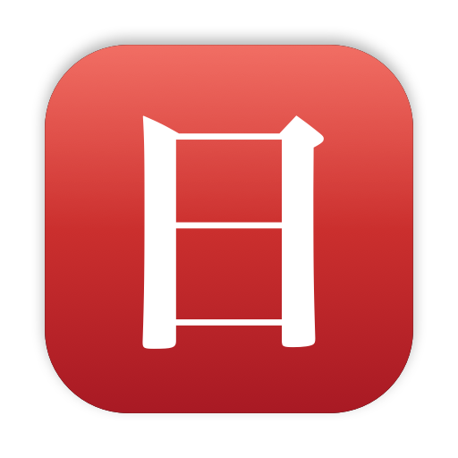

Nichi puts the day of the week in your Mac's menu bar as a single kanji, or as much of the date as you want, in any locale and calendar.
Requires macOS 15 or later. Free and open source.
The built-in clock shows one date style in one language. If you read Japanese, Chinese or Korean, a single character such as 木 says what day it is faster than any string. If you work across locales or calendars, you can run several indicators side by side.
One kanji for the weekday. Nothing else, no Dock icon.
Short or full weekday, day number, month and day, full date, era dates, or your own pattern.
Add indicators for different locales and calendars, each its own menu bar item.
No timer. It refreshes on day change, clock or time zone change, and wake.
.dmg from the latest release.Current releases are not yet signed with an Apple Developer ID, so macOS blocks the first launch. To allow it:
Or remove the quarantine flag from Terminal:
xattr -dr com.apple.quarantine /Applications/Nichi.appOn macOS 15 and later, right-click → Open no longer bypasses this warning. You only need to do this once.
A cask will be published once releases are signed and notarized:
brew install --cask ardasatata/tap/nichiClick the indicator for a menu with today's full date in each configured locale, Settings…, Launch at Login and Quit.
In Settings, add an indicator with +, then choose its locale, calendar and display style. The preview updates as you change options. Drag to reorder, select and press − to remove. Bold makes the text heavier; Boxed draws it inside a rounded rectangle like a calendar tile.
| Locale | Weekday | Calendar |
|---|---|---|
日本語 ja_JP | 月火水木金土日 | Japanese (令和) |
简体中文 zh_Hans | 一二三四五六日 | Chinese lunar |
繁體中文 zh_Hant | 一二三四五六日 | Chinese lunar |
한국어 ko_KR | 월화수목금토일 | Gregorian |
ไทย th_TH | จ อ พ พฤ ศ ส อา | Buddhist |
עברית he_IL | א׳ – ז׳ | Hebrew |
العربية ar, فارسی fa_IR | Locale default | Islamic, Persian |
Any other locale identifier your Mac knows also works. The calendar is chosen separately, so for example a Japanese locale can show a Gregorian or a Japanese-era date.
Examples for Thursday, 15 October 2026 in ja_JP:
| Style | Result |
|---|---|
| Weekday, single character (default) | 木 |
| Weekday, full | 木曜日 |
| Day number | 15日 |
| Month and day | 10月15日 |
| Month/day with weekday | 10/15(木) |
| Full date | 2026年10月15日 木曜日 |
| Date with era (Japanese calendar) | 令和8年10月15日(木) |
Choose Custom pattern and enter a Unicode (ICU) date pattern. Output follows the indicator's locale and calendar.
| Pattern | Meaning | Example (ja_JP) |
|---|---|---|
EEEEE | Narrow weekday | 木 |
EEEE | Full weekday | 木曜日 |
M/d | Month and day, numeric | 10/15 |
M/d(EEEEE) | Numeric date plus weekday | 10/15(木) |
Gy年 | Era and year | 令和8年 (Japanese calendar) |
Full pattern reference: Unicode TR35 date field symbols.
You need Xcode and XcodeGen.
brew install xcodegen
git clone https://github.com/ardasatata/nichi.git
cd nichi
xcodegen generate
xcodebuild -scheme Nichi -destination 'platform=macOS' test
scripts/build-release.sh 0.9.2 && scripts/make-dmg.sh 0.9.2Pushing a v* tag builds and publishes a GitHub Release. Signing, notarization and the Homebrew cask update run automatically once the repository secrets listed in the README are set.
To regenerate the app icon: swift scripts/make-icon.swift.